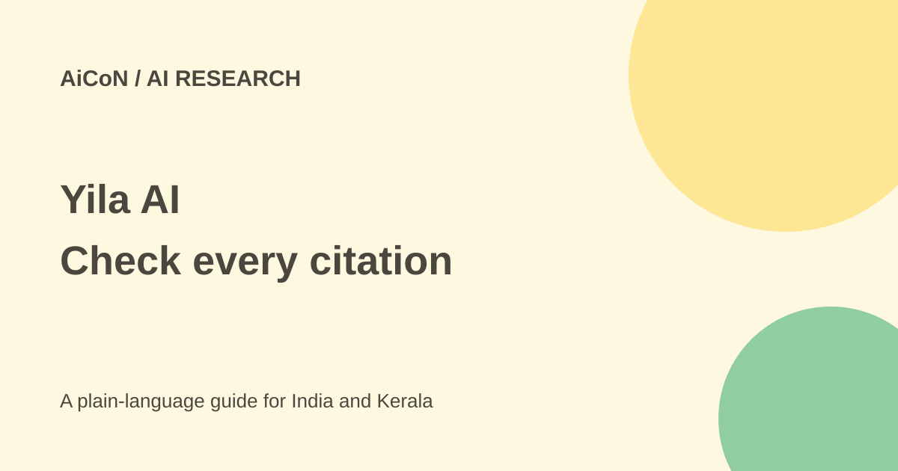

Yila AI: research citations, paid plans and privacy checks
Yila helps search papers, analyse data and prepare research outputs. Its current price page lists paid subscriptions, so the older free-beta claim should not guide a new purchase.

What is Yila?
Yila is a web research assistant. Its public page describes literature searches, reviews grounded in full papers, CSV or XLSX analysis, scientific figures, posters, paper-to-slide decks and manuscript formatting. You can begin with a question, a paper URL or a description of the output you need.
The vendor says its literature review workflow reads more than 50 full papers and traces claims to sources. That describes a product capability, not a guarantee that every run finds the right papers or that every citation supports the sentence beside it. Inspect the underlying evidence before using the result in a thesis or publication.
Current prices and free access
The checked monthly price page lists Starter at $20, Popular at $49 and Flagship at $99. At the reference rate used for this archive of about ₹96.43 per US dollar, those are approximately ₹1,929, ₹4,725 and ₹9,547 per month. These are rough conversions, not Indian checkout quotes; taxes, card charges and exchange rates can change the total.
Starter lists 10,000 credits per period and Popular lists 30,000. Successful subscription renewals refresh period credits. The fetched page did not expose a clear Flagship credit allowance, so confirm it in the actual offer. Credits measure work inside the product; they are not a promise of a fixed number of finished papers.
The page also offers yearly and lifetime billing options. Their final prices and conditions need a separate check. The current official page does not establish an ongoing free plan or the earlier one-time credit-pack offer. If a trial appears in your account, read its limits rather than assuming the 30 September free beta is still available.
How to use it for a research task
- Define a narrow question, date range, subject area and output. State whether you need a scoping review or a formal systematic-review workflow.
- Begin with public papers or a non-sensitive sample dataset. Confirm you have the right to upload the material.
- Ask for inclusion criteria and the search method alongside the answer. A polished summary alone is hard to audit.
- Open the cited papers and check titles, authors, dates and relevant passages. Check whether studies were corrected or retracted.
- For data analysis, inspect missing values, units, assumptions and the returned scripts. Re-run calculations independently where the result matters.
- Review figures, tables and slide text. A correct source can still be summarised with the wrong scope or number.
- Save the usable files and source list. Inspect credit usage and renewal settings before doing a larger job.
Privacy claims need the policy too
The security page says research is private by default, isolated by account and not used for model training. It describes encrypted transmission and revocable share links. These are vendor statements; this guide did not perform a security audit.
The security page's broad no-sharing language should be read with the privacy policy. The policy allows service-provider processing and describes Google Analytics 4, Microsoft Clarity session replay and affiliate attribution. It says those analytics tools are not intentionally used to collect private research documents, passwords or full card numbers, but they can process interaction, device and approximate-location data.
Private by default does not mean offline. Before uploading unpublished work, identifiable interview data, hospital records or commercial research, confirm your institution's approval and the vendor's handling terms. The security page describes deletion with no retained hidden copies; ask for contractual detail if backup retention matters to your project.
For Indian students and researchers
A small literature-search task can be a useful starting point. Follow your university's AI disclosure and authorship rules. Do not submit generated prose as though you personally checked every claim. For Malayalam or local-policy topics, inspect source coverage instead of assuming a broad scholarly search finds everything relevant to Kerala.
What changed since the original post?
The 30 September post described a free open beta and one-time credits. This guide replaces that with the current subscription page and adds INR estimates, credit uncertainty, citation checks and the difference between security marketing and provider-processing terms.
Frequently asked questions
Is Yila still confirmed free?
No ongoing free tier was established by the current official pricing page.
Does a citation prove accuracy?
No. Open the source and check the specific claim.
Can I upload patient data?
Not without an approved data-handling route and the required permissions.
Was paid access tested?
No. This guide uses public official pages.
Sources: Product workflows · Current subscription pricing · Security statements · Privacy and analytics · Billing terms. Checked 7 October 2026.